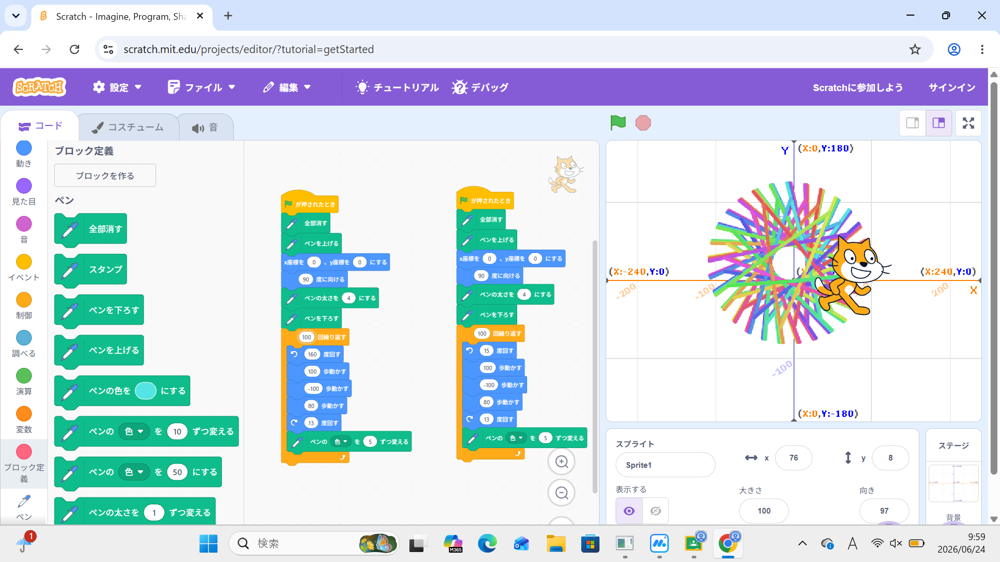
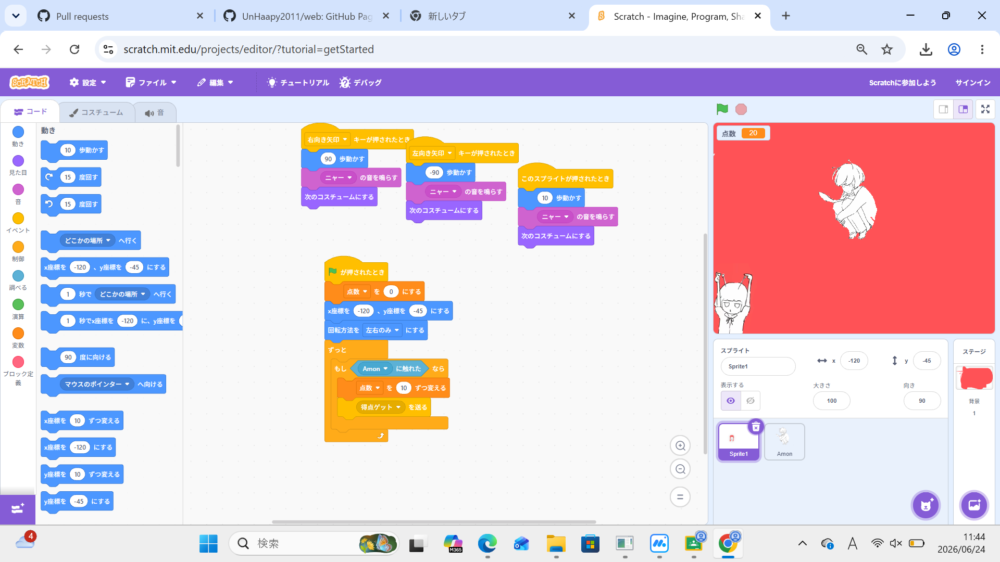

1週目のレポート ： 公大高専１年実習I-1
〇〇班〇〇番 ニックネーム
第1週目
1-1 サイエンスアート

1.内容
私はスクラッチの基本動作となるネコを移動させるプログラム、書くたびに線の色を帰る方法、動作の繰り返しなどといったものを学んだ。
また、そのためのブロックの組み方やブロックの能力も学んだ。
2.感想
何がどうなっているのかよくわからずとりあえず数値をふやしたり、減らしたりしていたらなんかいい感じな形の線をつくれてよかった。
また、数を少し変えただけで大きくかわったりするから難しいと思った。
1-2 ゲーム

1.内容
スクラッチを使ってちょっとしたゲームを作るために初めに作ったやつのやつを難しくしてくんだプログラムだった
これらから、キーノードとの連携や乱数の使い方などの方法を学んだ。
2.感想
スクラッチは今まで遊んできたことがほとんどでゲームを作ったことがなかったからあんまりわからなかったから少しこのゲームを作るのが難しかった。
キャラを自分でやろうとしたら思っていたよりもうまくいかなかった。
1-3 ホームページ作成
私のホームページ
1.内容
学習した内容を説明する文章を
自分たちで日頃見ているホームページを作るための簡単な初歩的なものを学んだ。 ホームぺージを開業するときやURLとかのやり方をまなんだ。
2.感想
ホームページを作るのが思っていたよりも複雑でびっくりした。
作るためのサイト自体も英語だったからというのもあるだろうけどとても難しそうだった。
一回止まった時先生がいたからいけたけど先生がいなければいけないと思った。
各ページへのリンク
1週目のレポート
2週目のレポート
3週目のレポート
私のホームページ